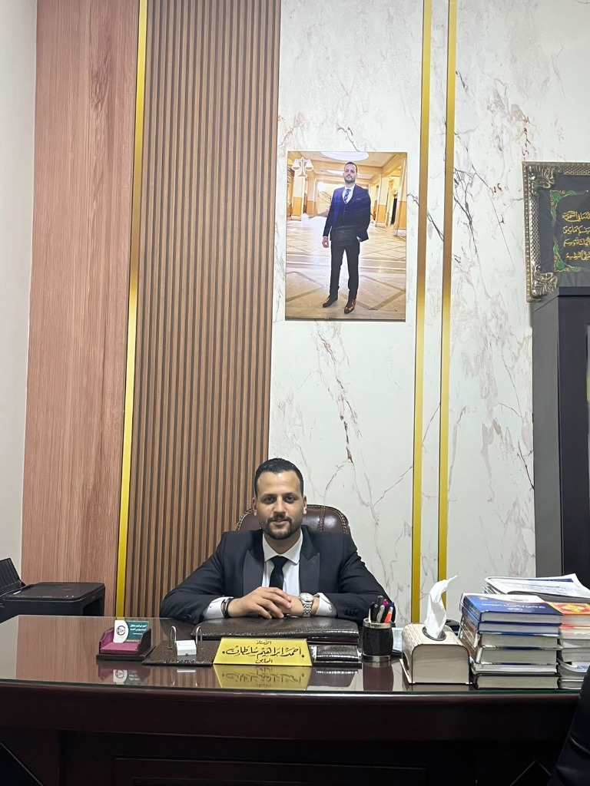
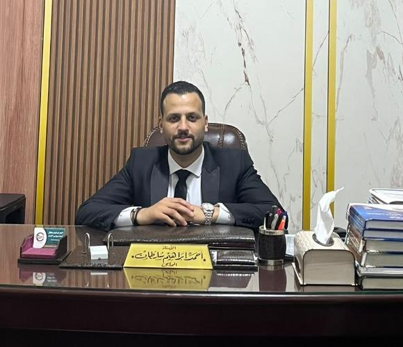

توثيق مرئي لمرافعات ونقاط دفاع قانونية جوهرية، مع استعراض لأبرز أحكام البراءة التاريخية وقبول الطعون بالنقض التي خاضها الأستاذ أحمد إبراهيم سلطان أمام مختلف محاكم الجنايات ودوائر النقض في مصر.

فيديو مرافعة مميز 14:20 دقيقةشرح تفصيلي للمرافعة التاريخية التي قدمها الأستاذ أحمد سلطان أمام محكمة جنايات الإسكندرية؛ حيث استند الدفاع إلى بطلان إذن النيابة العامة لابتنائه على تحريات مكتبية غير جدية، واستحالة تصوير الواقعة وفقاً لما سطره محضر الضبط، مما أدى لصدور حكم بات ببراءة كافة المتهمين.
مقاطع توعوية وشروح لأخطر ثغرات الإجراءات الجنائية وكيف تضمن حريتك وحقوقك في أصعب المواقف.

تسليط الضوء على كيفية تفكيك شهادة شهود الإثبات وإثبات تعارضها الجوهري مع التقرير التشريحي للطب الشرعي، وشيوع الاتهام بين أطراف النزاع.
نقاط ذهبية في قانون الإجراءات الجنائية يغفل عنها الكثيرون تتعلق بحالات التلبس المصطنعة وتجاوز مأمور الضبط القضائي لحدود اختصاصه المكاني والزماني.
تحليل دقيق لأسباب الطعن بالنقض الجنائي التي تستوجب نقض الحكم وإعادة المحاكمة، وكيفية صياغة الدفوع الجوهرية التي يعجز الحكم المطعون فيه عن الرد عليها.
دليل عملي سريع يوضح الفرق الدقيق بين الاستيقاف القانوني والقبض غير المشروع، وحقك الدستوري في الصمت وطلب حضور محاميك فوراً دون توقيع أي إقرار.
كيف استطاع الدفاع دحض تقرير الفحص المالي وإثبات سلامة الذمة المالية للمتهم وعدم توافر القصد الجنائي في جريمة الإضرار العمدي بالمال العام.
بيان عملي لانعدام ركن التسليم، والدفع باصطناع صلب الإيصال في تاريخ لاحق للتوقيع على بياض، والاستعانة بالطب الشرعي لأبحاث التزييف والتزوير.
نماذج موثقة من القضايا الكبرى المعقدة التي تولى الأستاذ أحمد سلطان المرافعة فيها وحقق فيها نتائج تاريخية حفظت حريات الموكلين وحقوقهم.
ثقة غالية بنيت بالصدق والأمانة والتواجد الفعلي في أصعب لحظات الشدة.
«كان ابني يواجه حكماً بالمؤبد في قضية ملفقة، وبفضل الله ثم براعة الأستاذ أحمد سلطان ومرافعته القوية أمام محكمة الجنايات، أثبت بطلان التحريات وحصل ابني على البراءة التامة وعاد لأسرته بعد أشهر من القلق المرير.»
«مذكرة الطعن بالنقض التي صاغها المستشار أحمد سلطان كانت تحفة قانونية بكل المقاييس. محكمة النقض قبلت الطعن وألغت الحكم بالكامل. أمانة وصدق وتواصل مستمر لم أره عند أي محامٍ آخر.»
«حضر معنا في النيابة العامة الساعة الثانية صباحاً في نفس ليلة القبض، ومنع تسجيل أي اعترافات تحت الضغط، وحصلنا على إخلاء سبيل فوري بضمان مالي بسيط. سلطان الجنايات اسم على مسمى.»
تواصل الآن مباشرة مع الأستاذ أحمد إبراهيم سلطان لحجز استشارة عاجلة أو إرسال تفاصيل القضية والمستندات عبر الواتساب لإجراء دراسة قانونية متعمقة.